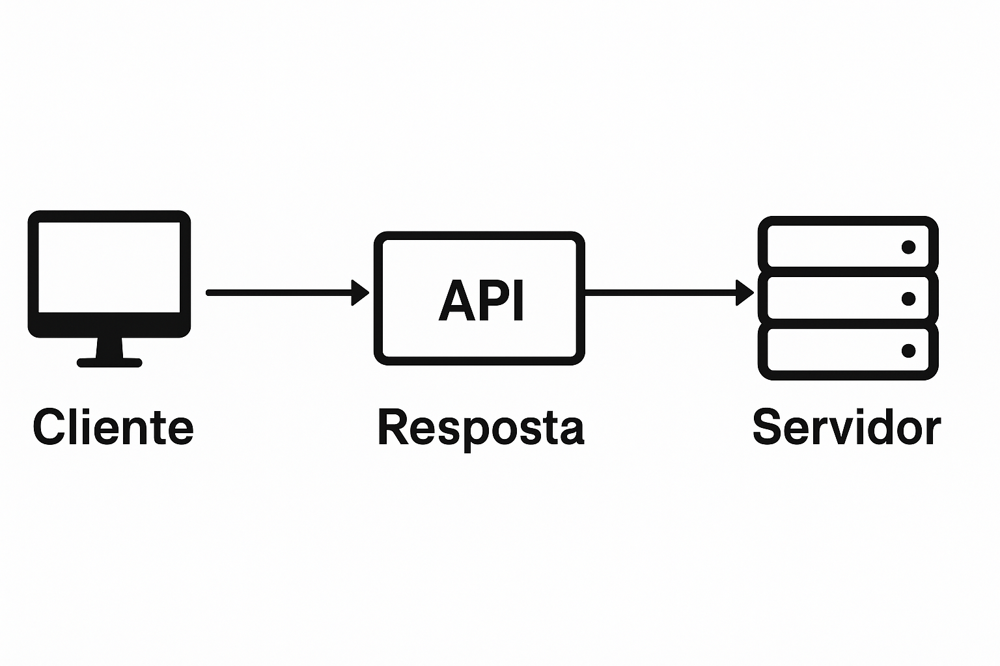

Desenvolvimento de Serviços e APIs
Aula 1: Fundamentos de APIs, REST e Ambiente Node.js
Professor: Carlos Bruno Oliveira Lopes
Objetivos da Disciplina
Capacitar o estudante a projetar, desenvolver, documentar e manter APIs robustas e seguras utilizando JavaScript no back-end.
Por que isso é importante?
Hoje, quase tudo é conectado. Do seu celular ao seu relógio, do iFood ao Netflix, tudo consome dados
de algum lugar. Esses "lugares" são as APIs.
Saber construir APIs é uma das habilidades mais requisitadas no desenvolvimento de software moderno,
seja para web, mobile ou microsserviços.
Índice da Aula
- 1. O que é uma API?
- 2. O que é Node.js?
- 3. O que é RESTful?
- 4. Configuração do Ambiente
- 5. Mão na Massa: O Framework Express.js
- 6. Nosso Primeiro Servidor
- 7. O Ciclo Request/Response
1. Conceitos: O que é uma API?
API significa Application Programming Interface (Interface de Programação de Aplicações).
É um conjunto de regras, padrões e protocolos que permite que diferentes sistemas de software "conversem" entre si.
A API define os "pedidos" que podem ser feitos, como fazê-los, e quais "respostas" esperar. Ela é o "contrato" de comunicação.
A Analogia do "Garçom"
Você (Cliente/Front-end): Faz um pedido (Requisição) ao garçom. "Eu quero um X-Bacon."
Garçom (API): Anota seu pedido, leva para a cozinha e garante que ele seja compreendido. Ele é a interface.
Cozinha (Servidor/Back-end): Prepara o prato (Processa a lógica e busca dados).
Garçom (API): Traz o prato pronto (Resposta) para você. "Aqui está seu X-Bacon."

Por que usar APIs?
-
›
Desacoplamento:
O Front-end (web, mobile) pode evoluir sem quebrar o Back-end, e vice-versa. Eles só precisam respeitar o "contrato" (a API).
-
›
Reutilização:
Uma mesma API pode servir dados para um site, um app Android e um app iOS ao mesmo tempo.
-
›
Ecossistemas:
Permite que outras empresas se integrem ao seu serviço (Ex: Pagar com Pix no iFood; o iFood usa a API do Pix).
2. O que é JavaScript no Back-end?
Historicamente, JavaScript (JS) foi criado para rodar dentro de navegadores (browsers) para adicionar interatividade às páginas web (cliques, animações, etc).
Nesse contexto, o JS não podia acessar o sistema de arquivos do computador, abrir conexões de rede ou interagir com um banco de dados (por segurança).
Com o Node.js, o JavaScript foi "libertado" do navegador.
Ele se tornou um ambiente de execução (runtime) que permite usar JS para construir o Back-end (a "cozinha" da nossa analogia), com acesso total a redes, arquivos e bancos de dados.
O que é o Node.js?
Node.js NÃO é uma linguagem de programação. A linguagem é JavaScript.
Node.js NÃO é um framework (como o Express).
É um ambiente de execução de JavaScript do lado do servidor, construído sobre o motor V8 do Google Chrome.
Como funciona?
- Single-Threaded (Uma única "fila"): Ele processa uma coisa de cada vez.
- Event Loop (Loop de Eventos): O "gerente" que organiza a fila.
- Non-blocking I/O (E/S Não-Bloqueante): A mágica do Node. Ele NÃO ESPERA por operações lentas (como ler um arquivo ou buscar dados no banco). Ele pede, e quando a operação termina, o Event Loop o avisa e ele pega o resultado.
Para que serve o Node.js?
Sua natureza "não-bloqueante" o torna extremamente eficiente para aplicações que lidam com muitas conexões simultâneas e operações de I/O (rede, disco).
- 1. APIs e Microsserviços: Seu principal uso. É leve e rápido para servir dados (Ex: Netflix, Uber).
- 2. Aplicações Real-Time: Chats, jogos online, apps de colaboração (Ex: Trello, Slack).
- 3. Ferramentas de Build: Usado para "empacotar" aplicações front-end (Webpack, Vite).
![[Empresas que usam Node.js]](Logos - Netflix, Uber, LinkedIn, Trello, Paypal.png)
3. Conceitos: O que é RESTful?
REST significa Representational State Transfer.
Não é uma ferramenta ou linguagem, mas sim um estilo arquitetural: um conjunto de regras e boas práticas para criar APIs que sejam fáceis de entender, previsíveis e escaláveis.
Uma API que segue os padrões REST é chamada de "API RESTful".
Princípios do REST (Resumido)
-
›
Cliente-Servidor:
Separação clara entre quem pede (Cliente) e quem responde (Servidor). Podem evoluir de forma independente.
-
›
Sem Estado (Stateless):
Cada requisição do cliente deve conter toda a informação que o servidor precisa. O servidor não "guarda o estado" ou "lembra" de requisições anteriores.
-
›
Cacheável (Cacheable):
As respostas devem indicar se podem ou não ser guardadas (em cache) pelo cliente para melhorar a performance.
Anatomia de uma Requisição
Uma requisição REST é composta por 4 partes principais:
1. Método (Verbo): A ação que queremos (GET, POST, PUT, DELETE).
2. Endpoint (URL): O "endereço" do recurso (Ex: `/users/1`).
3. Cabeçalhos (Headers): Metadados sobre a requisição (Ex: Tipo de conteúdo, Token de autenticação).
4. Corpo (Body): Os dados que estamos enviando (Ex: Um JSON com dados de um novo usuário). *Obrigatório em POST/PUT.*
![[Diagrama das partes de uma requisição]](Diagrama-Verbo, Endpoint, Header e Body.png)
Métodos HTTP (Verbos)
REST usa os verbos do protocolo HTTP para indicar a intenção da operação sobre um recurso.
| Verbo | Ação (CRUD) | Exemplo de Endpoint |
|---|---|---|
| GET | Ler (Read) | /users (Lista todos) ou /users/1 (Busca
um) |
| POST | Criar (Create) | /users (Cria um novo usuário) |
| PUT / PATCH | Atualizar (Update) | /users/1 (Atualiza o usuário 1) |
| DELETE | Remover (Delete) | /users/1 (Deleta o usuário 1) |
Endpoints e Formato de Dados (JSON)
JSON (JavaScript Object Notation) é o formato de dados padrão para APIs REST. É leve, legível e nativo do JavaScript.
Vamos ver um exemplo completo de POST:
POST /users
// Headers (Cabeçalho)
Content-Type: application/json
// Body (Corpo da Requisição em JSON)
{
"nome": "Carlos Bruno",
"email": "carlos.lopes@senac.com"
}
// Resposta (JSON) - Status 201 Created
{
"id": 1,
"nome": "Carlos Bruno",
"email": "carlos.lopes@senac.com"
}4. Configuração do Ambiente
Vamos preparar nossas ferramentas de trabalho.
1. Node.js e VS Code
-
A. Node.js (LTS)
O ambiente que executa nosso JavaScript no back-end.
Baixe em:
https://nodejs.org/(use a versão LTS)Verifique no terminal:
node -v npm -v -
B. VS Code
Nosso editor de código.
Baixe em:
https://code.visualstudio.com/
2. O Cliente de API (Insomnia/Postman)
Insomnia (ou Postman)
Um "Cliente de API". Essencial para testar nossas rotas.
Baixe em: https://insomnia.rest/
Por que precisamos disso?
Um navegador (Chrome, Firefox) só consegue fazer requisições GET de forma fácil (quando você digita uma URL).
Para testar nossas rotas POST, PUT ou DELETE, e para enviar dados (JSON) no Corpo (Body) da requisição, precisamos de uma ferramenta especializada.
5. Mão na Massa: Setup do Projeto
Abra seu terminal (ou o terminal integrado do VS Code):
1. Crie e acesse a pasta do projeto
mkdir aula1-api
cd aula1-api2. Inicie um projeto Node.js
npm init -yIsso cria o arquivo package.json.
3. Instale o Express.js
npm install expressIsso baixa o Express e o adiciona ao package.json e à pasta node_modules.
O que é o `package.json`?
É o "RG" ou a "certidão de nascimento" do nosso projeto Node.js.
Ele guarda:
- Informações básicas: Nome do projeto, versão, autor.
- Dependências (`dependencies`): Bibliotecas que o projeto precisa para rodar em produção (Ex: `express`).
- Dependências de Dev (`devDependencies`): Bibliotecas usadas apenas para desenvolver (Ex: `nodemon`, que veremos depois).
- Scripts: Atalhos para comandos (Ex: `npm run dev`).
O Framework Express.js
Se o Node.js é a "cozinha" (o ambiente), o Express.js é o "conjunto de panelas, fogões e balcões" (o Framework).
Construir um servidor web apenas com Node.js puro é possível, mas muito complexo e verboso.
O Express.js é o framework web mais popular para Node.js. Ele simplifica tarefas comuns, como:
- Criação e gerenciamento de Rotas (Routing).
- Gerenciamento de Requisições e Respostas.
- Uso de Middlewares.
Documentação Oficial (PT-BR): https://expressjs.com/pt-br/
6. Mão na Massa: O Código
Crie um arquivo chamado index.js e adicione o seguinte código:
// 1. Importar o express
const express = require('express');
// 2. Criar a "aplicação" (nosso servidor)
const app = express();
// 3. Definir a porta que o servidor vai rodar
const PORT = 3000;
// 4. Criar nossa primeira Rota (Endpoint)
// Método: GET | Recurso: / (raiz)
app.get('/', (request, response) => {
// 'request' (req) = O que o cliente enviou
// 'response' (res) = O que vamos devolver
response.send('Hello World!');
});
// 5. "Ligar" o servidor para ouvir requisições
app.listen(PORT, () => {
console.log(`Servidor rodando na porta ${PORT}`);
});7. O Ciclo Request/Response
Vamos analisar a parte mais importante do nosso código:
app.get('/', (request, response) => {
// ...
});Isso é uma função de callback. O Express a executa automaticamente toda vez que uma requisição GET chega no endpoint `/`.
-
request(ou `req`)É um objeto que contém TUDO sobre a requisição do cliente: Headers, IP, parâmetros (Ex:
req.params), corpo (Ex:req.body). -
response(ou `res`)É um objeto com métodos para construir e enviar a resposta de volta ao cliente (Ex:
res.send(),res.json(),res.status()).
6. Mão na Massa: Executando
1. Execute o servidor
No seu terminal, digite:
node index.jsVocê deve ver a mensagem: Servidor rodando na porta 3000
2. Teste no Navegador
Abra seu navegador (Chrome, Firefox, etc.) e acesse:
http://localhost:3000Você deve ver a mensagem "Hello World!" na tela.
3. Teste no Insomnia
Abra o Insomnia, crie uma nova requisição do tipo GET, insira a URL http://localhost:3000 e clique em "Send".
O resultado deve ser o mesmo (Status 200 OK e Body "Hello World!").
Resumo da Aula 1
O que aprendemos hoje:
- ✔ O que é uma API e por que ela é fundamental.
- ✔ O que é o Node.js (Runtime) e o que é o Express.js (Framework).
- ✔ O que é uma API RESTful e seus verbos (GET, POST, etc).
- ✔ Como configurar o ambiente (Node, VS Code, Insomnia).
- ✔ Como iniciar
um projeto com
npm. - ✔ Como criar um servidor básico com Express.
- ✔ O que são os
objetos
requesteresponse.
Obrigado!
Próxima Aula:
Aula 2: Arquitetura em Camadas (Rotas, Controllers e Services)
Perguntas?